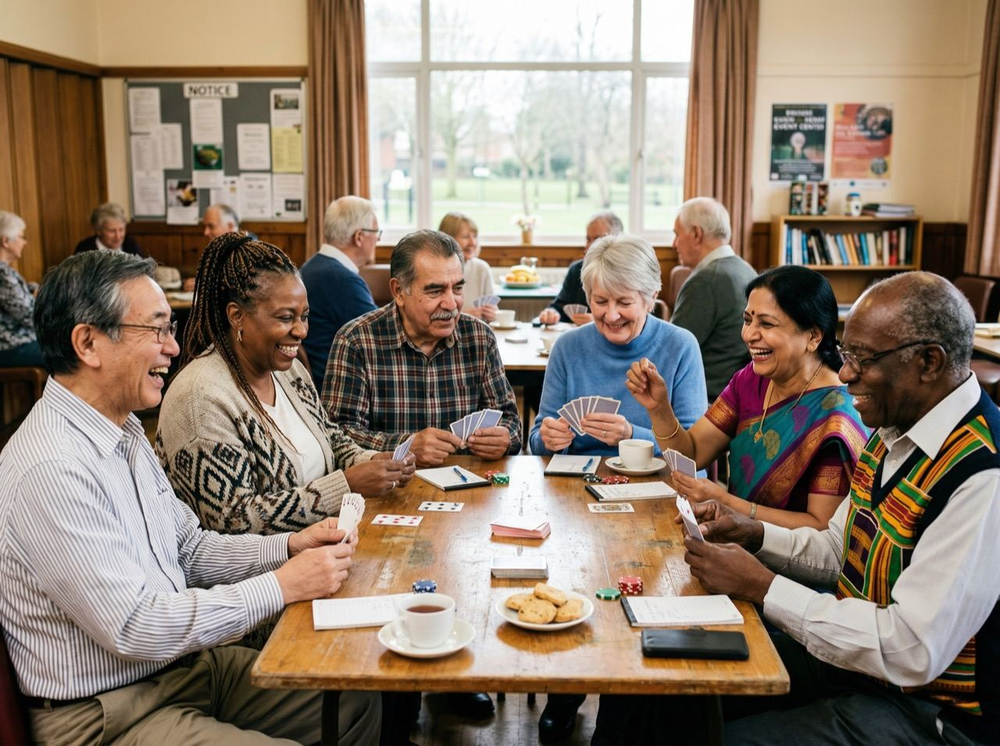

A curated list, not a link dump
Ontario resources worth knowing about
Every link below is a real, verifiable government or community program, nothing promotional, nothing that just leads back to me. Organized by what you're actually trying to solve.

Need: income and benefits
Government benefits & tax credits
Guaranteed Income Supplement (GIS)
Extra monthly support for lower-income OAS recipients.
Visit canada.ca ↗Ontario Seniors' programs hub
The province's central page for senior-specific programs and services.
Visit ontario.ca ↗Ontario Seniors Care at Home Tax Credit
A refundable credit that can offset eligible home care and medical costs.
Visit ontario.ca ↗Ontario Drug Benefit (ODB)
Prescription drug coverage for eligible Ontario seniors.
Visit ontario.ca ↗Need: care and health
Home care, health & caregiver support
Ontario Health at Home
The publicly funded home and community care system (successor to the old LHINs/CCACs). Start here for an assessment.
Visit ontariohealthathome.ca ↗Ontario Community Support Association
A directory of local community support services across the province.
Visit ocsa.on.ca ↗Alzheimer Society of Ontario
Support, education, and local chapters for dementia care.
Visit alzheimer.ca ↗Ontario Caregiver Organization
Support and practical resources specifically for family caregivers.
Visit ontariocaregiver.ca ↗Need: legal help and advocacy
Legal & advocacy resources
Advocacy Centre for the Elderly (ACE)
A legal clinic specializing in elder law for low-income Ontario seniors.
Visit acelaw.ca ↗Legal Aid Ontario
Legal assistance for eligible Ontario residents, including seniors.
Visit legalaid.on.ca ↗Ontario Human Rights Commission
Protection against age discrimination and other rights violations.
Visit ohrc.on.ca ↗Need: getting around and staying connected
Community & transportation
211 Ontario
A free, confidential service that connects you to community and social services by phone or online, any time.
Visit 211ontario.ca ↗Seniors Active Living Centres
Find a government-funded seniors' centre and its programs near you.
Visit ontario.ca ↗Local accessible transit
Most regions run their own door-to-door service for seniors and people with disabilities, Wheel-Trans in Toronto, TransHelp in Peel, Durham Region Transit's specialized service, and York Region's Mobility Plus among them. Search "[your city] specialized transit" or call 211 to find yours.
Need: understanding reverse mortgages independently of me
Neutral reverse mortgage & mortgage-broker information
Financial Consumer Agency of Canada
The federal government's own, lender-neutral explanation of how reverse mortgages work in Canada.
Visit canada.ca ↗FSRA, verify any mortgage agent's licence
Ontario's regulator. Use this to confirm any mortgage agent, including me, is licensed and in good standing before you work with them.
Search FSRA licensees ↗Looking for how these fit into a bigger plan? See Retirement Planning or Home Care & Support.